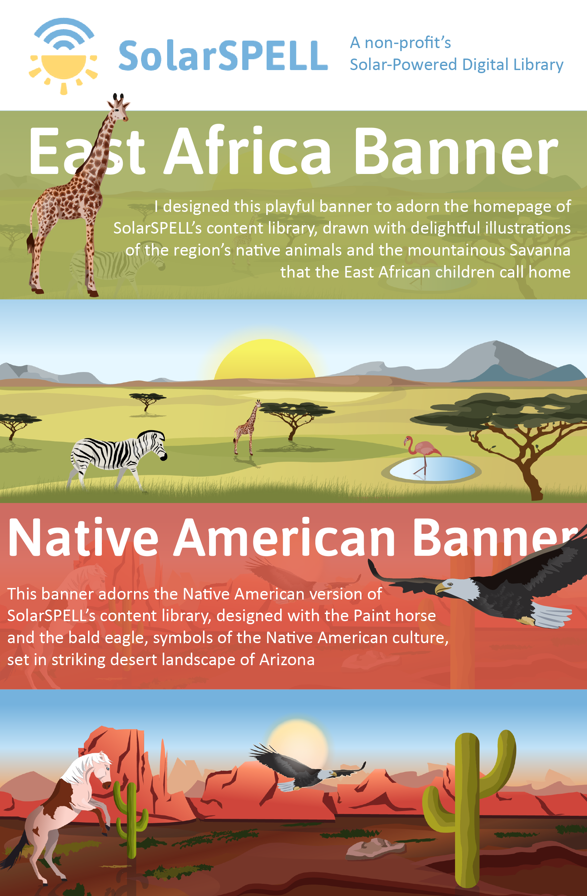

☰
Target audience's comments on the banner, reported by onsite team
"Today, we're working with teachers from South Sudan and a few from Rwanda. They felt that the banner was absolutely beautiful and started a discussion about it...that this was a good way to teach the East African children about the animals that are associated with their region, on a global level. Your banner prompted an unexpectedly deep discussion, and everyone really loved the banner."
